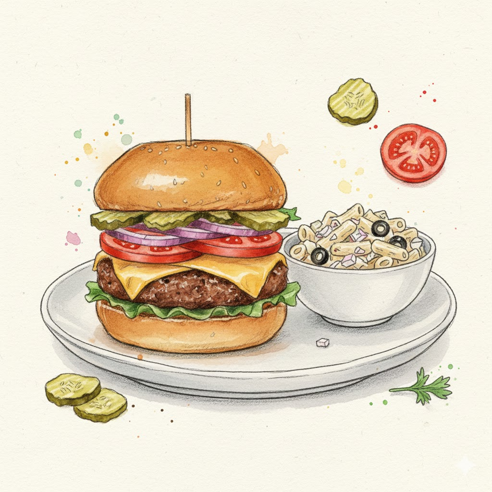
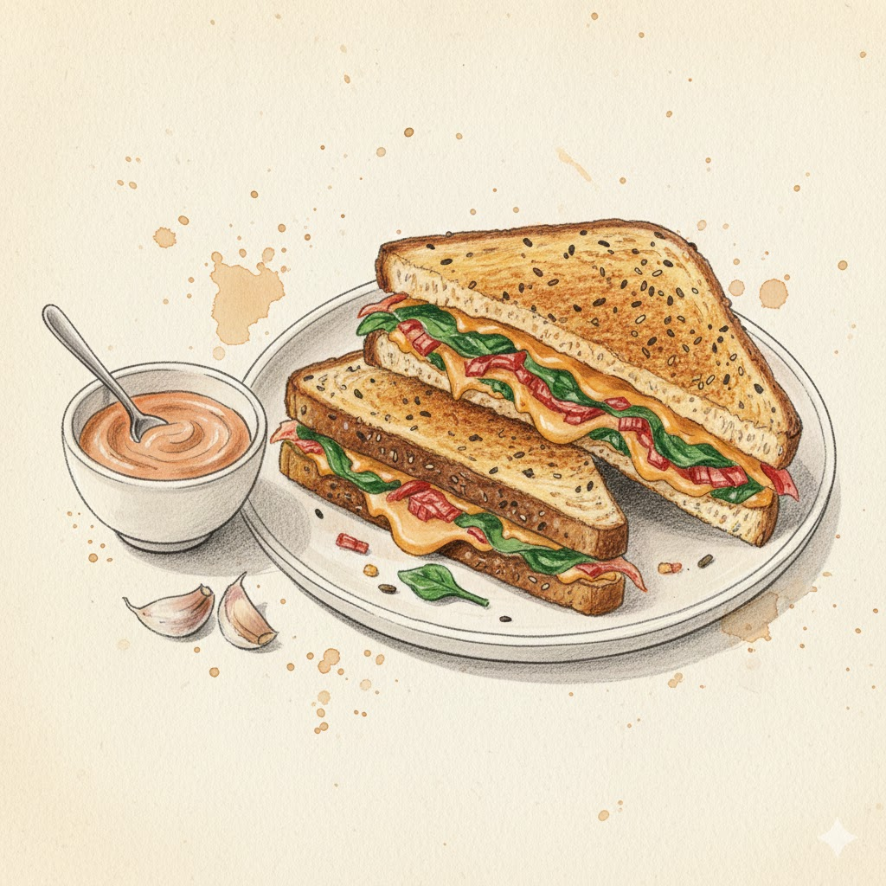
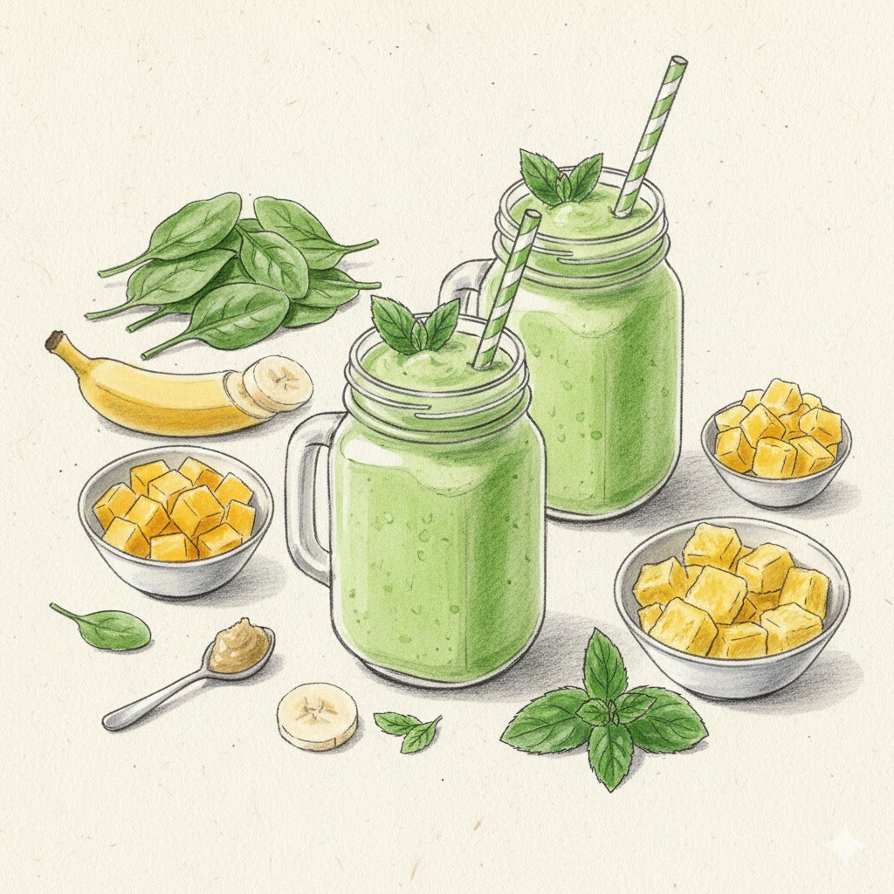

Ingredients
- 1 cup spinach
- 1 tsp ginger paste
- 1 banana
- 4-5 mint leaves
- 1 cup frozen mango
- 1 cup frozen pineapple
- 1 pound 80/20 ground beef
- 4 brioche buns
- 4 slices of cheddar cheese
- pickle chips
- 1 tomato
- 1 red onion
- shredded lettuce
- 1 pound pasta (rigatoni or penne)
- 1 cup mayonnaise
- 1 can black olives
- 1 white onion
- 1 yellow onion
- 4 cloves of garlic
- 1 red pepper
- 1 14.5oz can crushed fire-roasted tomatoes
- 1/4 oz cilantro
- 4 eggs
- feta cheese
- pitas or naan
- 1/8 tsp chili flakes
- 4 garlic cloves
- 5 oz spinach
- 1 tsp gochujang
- 3 tsp mayonnaise
- 2/3 cup kimchi
- 4 slices of bread
- 2/3 cup cheddar cheese
- 4 tablespoons everything seasoning.
Recipe One

Ingredients
- 1 pound 80/20 ground beef
- 4 brioche buns
- 4 slices of cheddar cheese
- pickle chips
- 1 tomato
- 1 red onion
- shredded lettuce
- 1 pound pasta (rigatoni or penne)
- 1 cup mayonnaise
- 1 can black olives
- 1 white onion
Instructions
- Boil pasta according to package instructions. Place in a large bowl and cool to room temperature.
- Dice onion and drain olives.
- Combine pasta, onion, olives and mayonnaise. Season with salt and pepper to taste.
- Refrigerate over night.
- Thinly slice the tomato and red onion.
- Mix ground beef with salt and pepper.
- Create 4 evenly-sized patties. Put a dimple in the middle so it cooks to a consistent thickness.
- Lightly toast the bun.
- Build the burger by layering the burger, sliced tomato, onion, and pickles. Add ketchup, mustard, and mayonnaise to taste.
Recipe Two
Ingredients
- 1 yellow onion
- 4 cloves of garlic
- 1 red pepper
- 1 14.5oz can crushed fire-roasted tomatoes
- 1/4 oz cilantro
- 4 eggs
- feta cheese
- pitas or naan
Instructions
- Chop onion and red pepper. Mince garlic.
- In a frying pan, heat one tablespoon of oil over medium heat and cook onions for about five minutes.
- Add crushed tomatoes and cook until boiling. Reduce heat and simmer another 5-10 minutes, until the sauce is thickened.
- Using the back of a spoon, make four indentations in the sauce. Crack an egg in each indentation. Cook seven minutes longer until eggs are just set.
- Remove from heat, and sprinkle feta and cilantro.
- Serve in a bowl with toasted pitas or naan.
Recipe Three

Ingredients
- 1/8 tsp chili flakes
- 4 garlic cloves
- 5 oz spinach
- 1 tsp gochujang
- 3 tsp mayonnaise
- 2/3 cup kimchi
- 4 slices of bread
- 2/3 cup cheddar cheese
- 4 tablespoons everything seasoning.
Instructions
- In a frying pan, heat 2 tablespoons olive oil with chili flakes.
- Add spinach and cook until wilted.
- Mix gochujang and mayonnaise in a small bowl and spread on one side of each slice of bread. Sprinkle with everything seasoning and press it into the bread.
- Build sandwiches by layering spinach, kimchi, and cheese between two slices of bread.
- Fry in butter until golden brown on both sides.
Breakfast Recipe

Ingredients
- 1 cup spinach
- 1 tsp ginger paste
- 1 banana
- 4-5 mint leaves
- 1 cup frozen mango
- 1 cup frozen pineapple
Instructions
- In a blender, combine 1 cup of water, spinach, ginger, banana, and mint until smooth.
- Add mango and pineapple, and blend until smooth.
- Serve in mason jars!